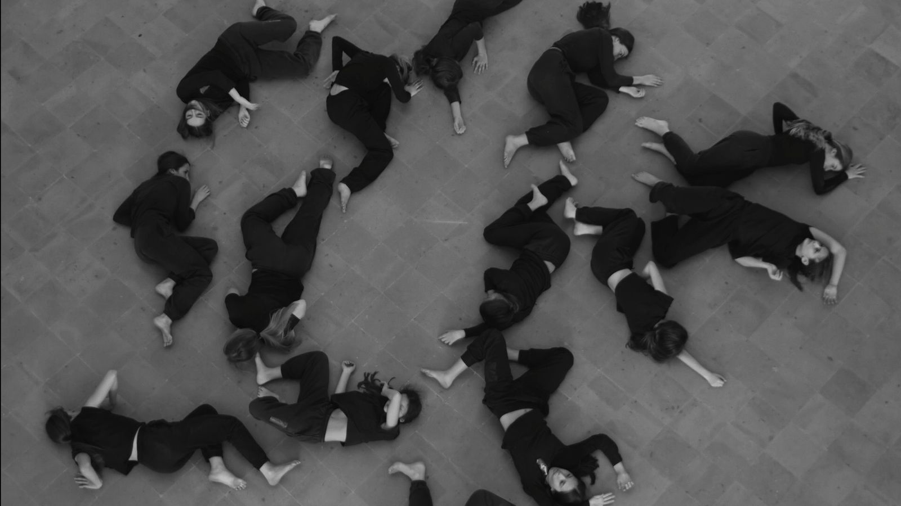

Progetti selezionati
-
LOOM
Film di danza · Regista · 2026
LOOM è un film di danza che esplora il rapporto tra il corpo reale e la sua immagine audiovisiva.
-
Black, White & Blood
Videoinstallazione · Co-ideatore · 2026
Videoinstallazione realizzata per la facciata della Sede Fienili dell’Accademia di Belle Arti di Roma, racconta il rapporto astratto tra animali al macello e operai in fabbrica.

-
Tornano
Cortometraggio · Regista · 2026
Tornano racconta ciò che resta quando tutto sembra esser già successo e il tentativo, fragile e forse inutile, ma necessario, di trattenere un momento mentre lo si sta già perdendo.

-
Ursprung & Untergang
Installazione filmica a tre canali · Operatore di camera · 2026
Opera sulla trasformazione, con la quale l’artista Julia Krahn racconta l’origine e la dissoluzione.

-
CLUSTER. Symphony of Data
Documentazione · Operatore di camera e montatore · 2026
Documentazione dell’installazione omonima realizzata da Cristian Rizzuti, Julian Alvarez e Riccardo Torresi.
-
Andrea Pazienza. Non sempre si muore
Documentazione · Operatore di camera e montatore · 2026
Documentazione della mostra omonima in esposizione al Museo MAXXI di Roma.

-
Night Sense
Video musicale · Regista · 2025
Video musicale del brano omonimo del gruppo Leap, segue un gruppo di studenti di danza lungo una settimana di prove.